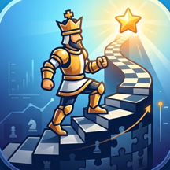

Chess Climb
Tactics Trainer
Chess Climb is an endless feed of chess puzzles that adapts to you. Solve a puzzle, see how you did, and the next one appears. The app learns which themes you miss, follows each miss with an easier puzzle on the same theme, and brings the puzzles you missed back later.
Questions, bug reports or ideas: sammychess10@gmail.com
Questions
How is my rating calculated?
Chess Climb uses Glicko-2, the same rating system Lichess uses for puzzles. Solving a puzzle raises your rating and missing one lowers it. How much depends on how hard the puzzle is. A new rating moves quickly and shows a ? until it settles, so a rough starting guess is fine.
Does solving speed affect my rating?
No. Your rating counts only solves and misses. Your speed helps the app decide how hard your next puzzles should be.
Why did a hint lower my rating?
Using a hint counts as a miss. The Hint button asks you to tap twice, so you can't use one by accident.
Can I skip a puzzle?
No. If you're stuck, tap Give up to see the solution. It counts as a miss.
Can I go back to an earlier puzzle?
Yes. Tap Back to see earlier puzzles, including the one you just finished, and step through their solutions.
Can I check a puzzle with an engine?
Yes. After a puzzle, tap Engine. Arasan runs on your phone and shows its evaluation and best line below the board. You can also play your own moves on the board and step back and forth through them. Tap Engine again to turn it off; it also turns off when you move on.
What do the themes mean?
Tap a theme under a finished puzzle, or the ⓘ next to it in Progress, for a short explanation.
Can I change the board and pieces?
Yes. Settings has 9 board colors and 9 piece sets, and a clock while solving that you can turn off.
Will I see puzzles I missed again?
Yes. A missed puzzle comes back once, at least 12 hours later. If you miss it again, it returns once more a few days later. Reviews don't change your rating, since you've already seen the answer.
Do I need an internet connection?
No. The puzzles and the engine are all on your phone, so everything works offline.
How do I start over?
In Settings, tap Reset all progress. This deletes your rating, history and review schedule.
Where do the puzzles come from?
From the Lichess open puzzle database, which anyone may use freely (CC0). Chess Climb is not affiliated with or endorsed by Lichess.
Privacy
Chess Climb doesn't collect any data about you. Read the privacy policy.
Credits
Puzzles: Lichess open database (CC0). Engine: Arasan 26 by Jon Dart (MIT). Chess pieces: Colin M.L. Burnett (BSD); Alexis Luengas (Apache 2.0); Maurizio Monge (MIT); RhosGFX (CC0); Kosal Sen, Nikolay Anzarov and James Faure (CC BY 4.0).